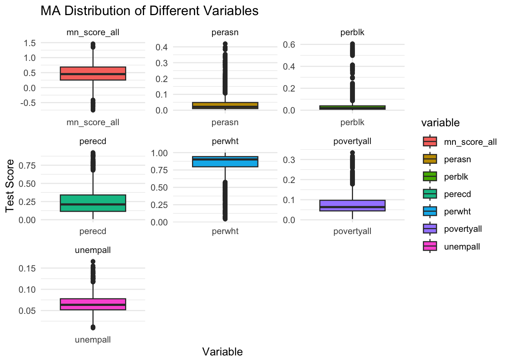
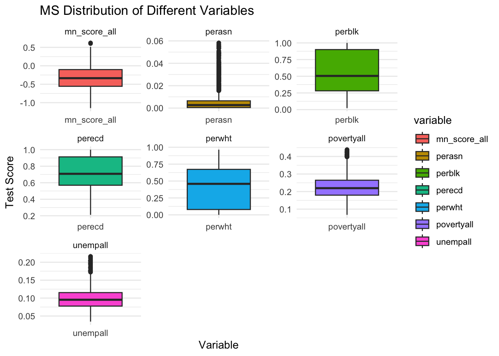
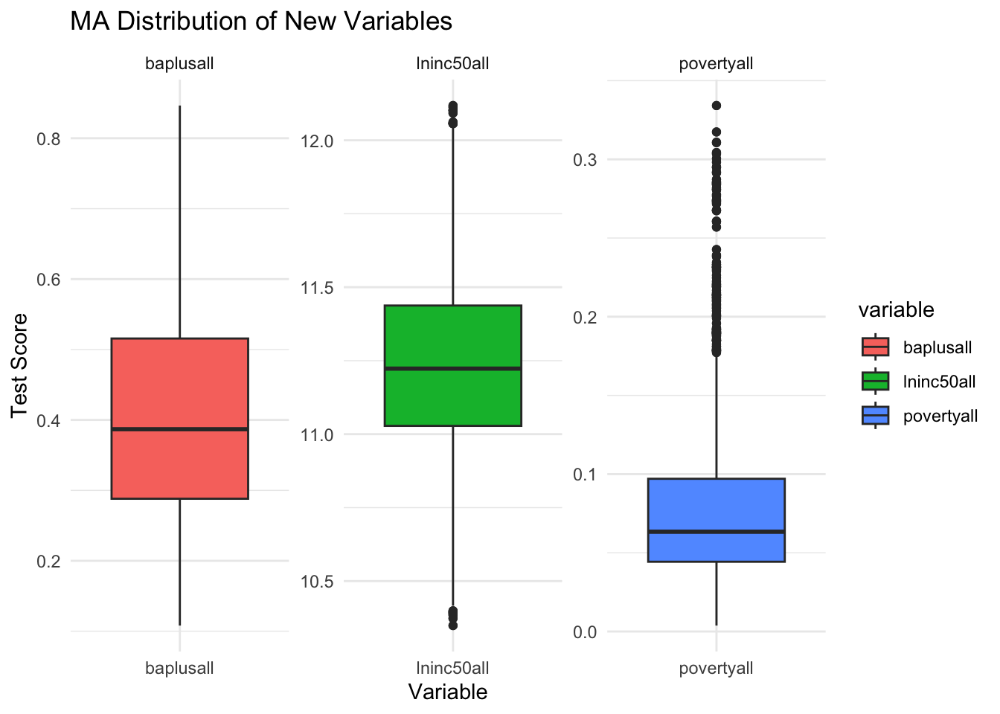
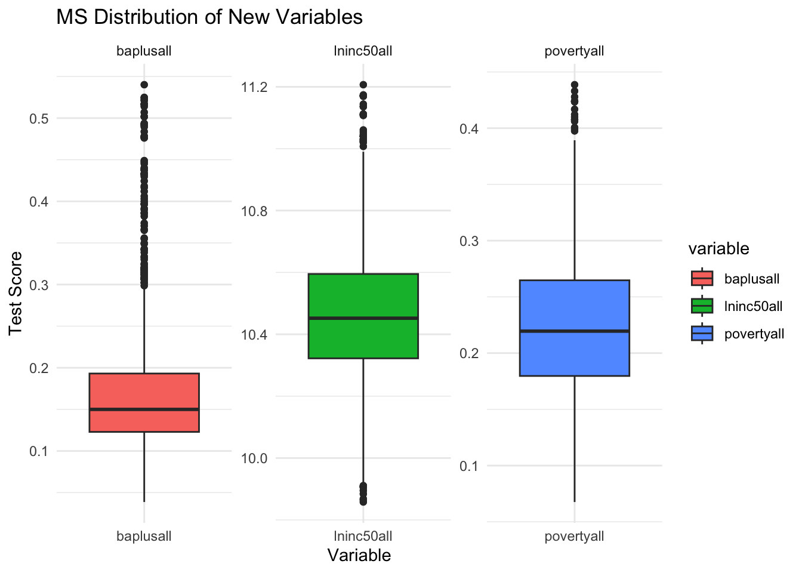

| Variable | Description |
|---|---|
| District | Geographic school district |
| Subject - RLA | Reading Language Arts test scores |
| Subject - MTH | Math test scores |
| Mn_score | Average test scores for the district; Anything less than -0.75 is below basic. Between -0.75 and 0.05 is basic. Between 0.05 and 1.0 is proficient. Above 1.0 is advanced. |
| Numstu | Number of students who took the test |
| Per | Percentage of students in a particular grade |
| All | All students |
| Asn | Asian students |
| Blk | Black students |
| Fem | Female students |
| Hsp | Hispanic students |
| Male | Male students |
| Mtr | Multiracial students |
| Nec | Not economically disadvantaged students |
| Ecd | Economically disadvantaged students |
| Wht | White students |
| Totenrl | Total number of students enrolled in a particular grade |
| Unempall | Unemployment rate in the district |
| Snapall | SNAP (Supplemental Nutrition Assistance Program) receipt rate in the district |
| Single_momall | Rate of households with single mothers in the district |
SEDA Data
Describing the sources of our data and the cleaning process.
Describe where/how to find data
Our data comes from the Stanford Education Data Archive (SEDA). The purpose of SEDA is to provide comprehensive, publicly available data on U.S. K-12 education academic research, policy analysis, and accountability purposes. It is commonly sourced from for the study of educational disparities, policy effectiveness, and the impact of various interventions.
The data is primarily gathered for academic research, policy analysis, and accountability purposes. Researchers utilize it to study educational disparities, policy effectiveness, and the impact of various interventions. Policymakers rely on this data to make informed decisions, allocate resources, and hold stakeholders accountable for student outcomes.
Our Datasets
First Dataset
Link to the original data source: https://edopportunity.org/get-the-data/seda-archive-downloads/
Link to load_and_clean_data.R file: loading script
Data Files and Variables
Cleaning
- We cleaned our data before importing it, as it was 500mB. We kept the scores for each race and the locations, as we are most interested in those.
- We downloaded the raw data and saved it in the data folder.
- Utilized the dplyr package to:
- Select relevant attributes for the project.
- Remove unnecessary attributes.
- Remove missing attributes.
- Remove unusual values.
- Utilized the collapse package to collapse selected variables into their mean, creating one observation per year, district, class subject, and state combination. Previously it was expanded into grade levels, and finding the mean across those for each year allowed for compression of the very large original data set. The cleaned data was exported to the data folder.
- Filter Massachusetts and Mississippi Dataset
- Link to
load_and_clean_data.Rfile: loading script
Summary of numerical variables
To start, we aimed to create summary tables of the general descriptive statistics for the explanatory variables included in our analysis of Massachusetts (MA) and Mississippi (MS).
| Variable | Description | Min | Max | Mean | Median |
|---|---|---|---|---|---|
| perecd | Percentage of economically disadvantaged students | 0.009009009 | 0.9237849 | 0.25723116 | 0.21066416 |
| povertyall | Overall poverty rate | 0.003767741 | 0.3341780 | 0.07671932 | 0.06338371 |
| unempall | Unemployment rate | 0.009126523 | 0.1654570 | 0.06644015 | 0.06349946 |
| perblk | Percentage of Black students | 0.000000000 | 0.6057010 | 0.03854075 | 0.01873459 |
| perasn | Percentage of Asian students | 0.000000000 | 0.4195884 | 0.04166573 | 0.02125702 |
| perwht | Percentage of White students | 0.043547497 | 1.0000000 | 0.83332103 | 0.90210655 |
| Variable | Description | Min | Max | Mean | Median |
|---|---|---|---|---|---|
| perecd | Percentage of economically disadvantaged students | 0.21128461 | 1.00000000 | 0.725154384 | 0.707870219 |
| povertyall | Overall poverty rate | 0.06760336 | 0.43864822 | 0.223992864 | 0.219527415 |
| unempall | Unemployment rate | 0.03440398 | 0.21617603 | 0.098541433 | 0.095361948 |
| perblk | Percentage of Black students | 0.02304695 | 1.00000000 | 0.544714064 | 0.505269078 |
| perasn | Percentage of Asian students | 0.00000000 | 0.05819051 | 0.005957721 | 0.002673716 |
| perwht | Percentage of White students | 0.00000000 | 0.96406932 | 0.419329515 | 0.458589231 |
Visualization of Variables
By examining these histograms, we can visually analyze the distribution of each variable. This visualization helps us understand the spread, central tendency, and potential outliers within the test scores across different racial groups and economic statuses.


Second Dataset (Adding more variables)
- Newly added key variables to the educational data: median income (log-transformed), parental education level, and poverty rate.
- Data from the Stanford Education Data Archive (SEDA) enriches state-level analysis over time.
- Rigorous data cleaning ensures analysis integrity by removing instances with missing values.
- Meticulous merging aligns new variables with existing data by state and year.
Link for the new dataset: https://edopportunity.org/get-the-data/seda-archive-downloads
Link to load_and_clean_data.R file: loading script
Data Files and Variables
| Variable | Description |
|---|---|
| lninc50all | Natural log of median income |
| baplusall | Percentage of parents holding at least a Bachelor’s degree |
| povertyall | Overall poverty rate |
Summary of numerical variables
| Variable | Description | Min | Max | Mean | Median |
|---|---|---|---|---|---|
| lninc50all | Natural log of median income | 10.348664000 | 12.1182110 | 11.23381391 | 11.22294600 |
| baplusall | Percentage of parents holding at least a Bachelor’s degree | 0.108037650 | 0.8464119 | 0.41176147 | 0.38683075 |
| povertyall | Overall poverty rate | 0.003767741 | 0.3341780 | 0.07671932 | 0.06338371 |
| Variable | Description | Min | Max | Mean | Median |
|---|---|---|---|---|---|
| lninc50all | Natural log of median income | 9.85782910 | 11.2068380 | 10.4684077 | 10.4519910 |
| baplusall | Percentage of parents holding at least a Bachelor’s degree | 0.03869108 | 0.5401447 | 0.1707087 | 0.1499818 |
| povertyall | Overall poverty rate | 0.06760336 | 0.4386482 | 0.2239929 | 0.2195274 |
Visualization of Variables

